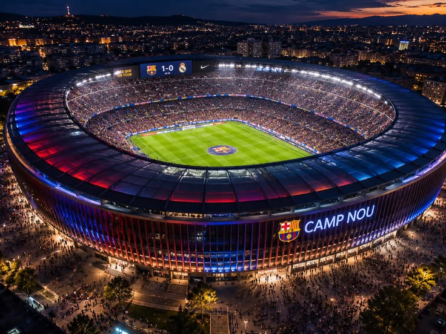
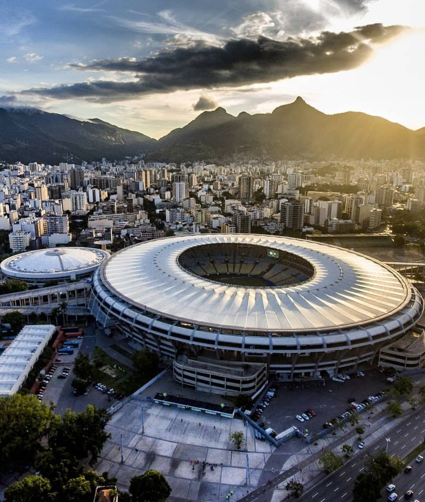
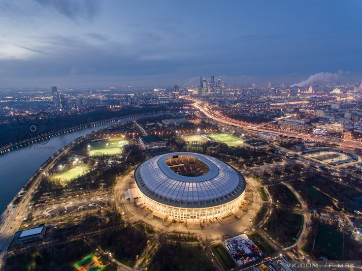
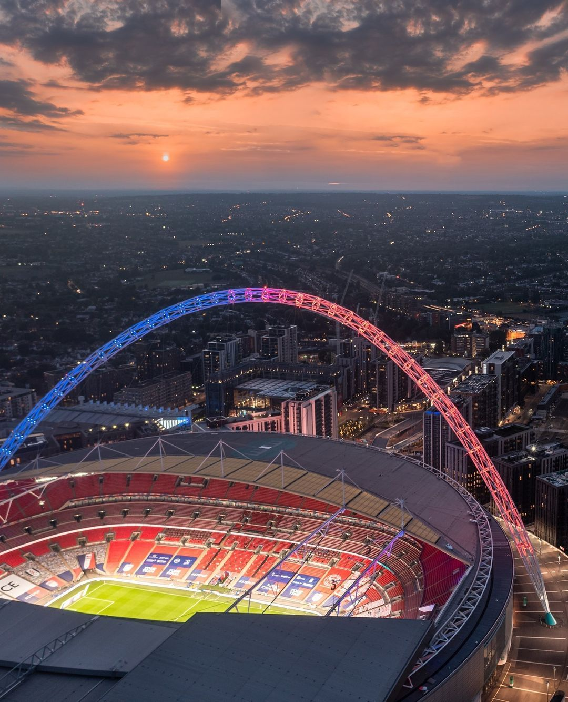
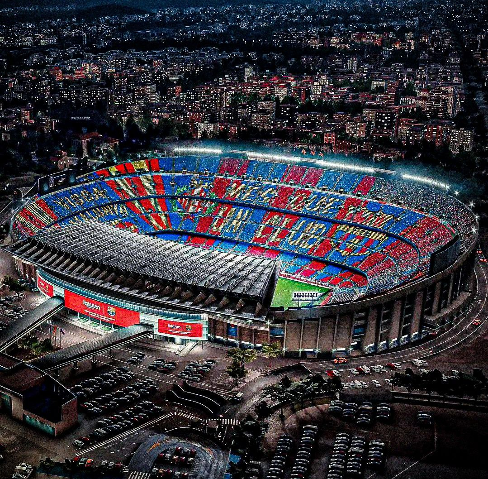
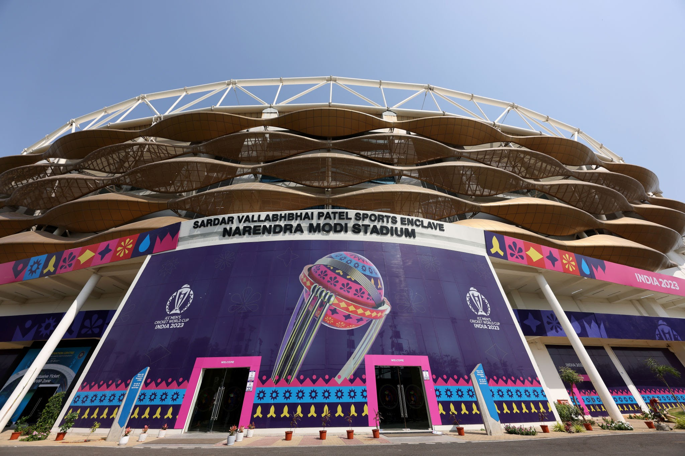
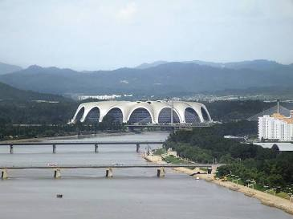

Построен в 1923 году и стал символом английского футбола.

Дом для успешных клубов — ФК «Барселона».
Принимала финалы чемпионатов мира 1950 и 2014 годов.
Реконструированы к ЧМ-2018, вмещают 80 000 зрителей.

Наибольший стадион в мире на сегодняшний день, вмещающий 132 000 зрителей.
Маракана (Рио-де-Жанейро)
Легендарный бразильский стадион, который принимал финалы чемпионатов мира по футболу в 1950 и 2014 годах. Настоящий символ мирового футбола и одна из самых известных спортивных арен на планете. Официальное название арены — «Мариу Филью», но весь мир знает её под именем района Рио-де-Жанейро, где она расположена.
В 1950 году на решающем матче здесь собралось почти 200 тысяч зрителей, что до сих пор остаётся абсолютным рекордом в истории футбола. Сегодня, после масштабной реконструкции, стадион стал более современным и комфортным, вмещая около 78 тысяч болельщиков. Арена принимает не только важнейшие спортивные события, но и грандиозные музыкальные концерты.

Колоссальное сооружение, которое очень долгое время считалось абсолютным лидером.